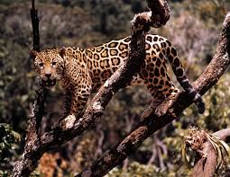
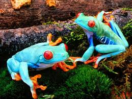
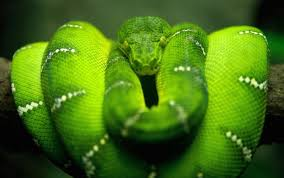

Other Habitats


Katie Bozzone
Tree Frogs
Tree frogs have many prey but they do have defense mechanisms. The animals that prey on them are mammals, reptiles, birds, and fish.The protect themselves by camouflaging into their surroundings such as grass, plants, and trees. Just like a frog you can catch in ponds around you tree frogs tend to eat flies, ants, crickets, beetles, moths, and other small invertebrates. Male tree frogs mate with by using whats called and advertisement calls. Much like other animals each tree frog species have their own calls.
Fun Facts About Tree Frogs